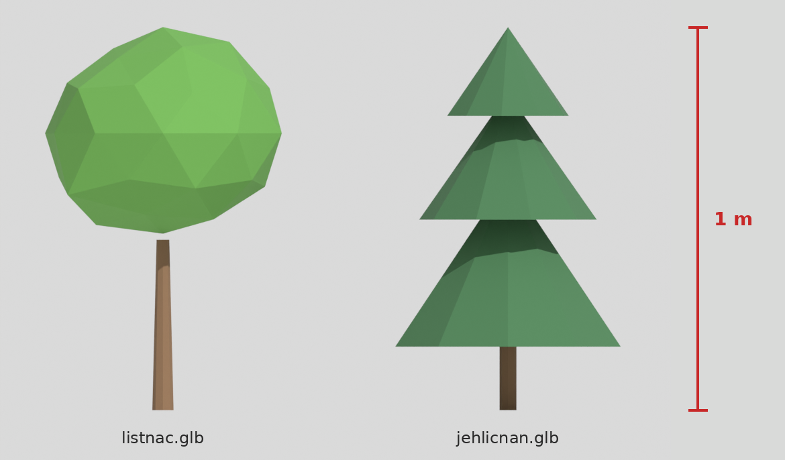
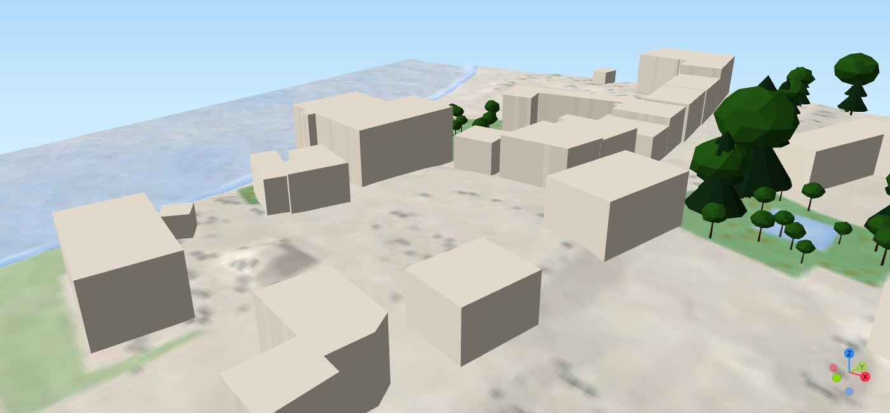

Tvorba 3D modelu krajiny
Příprava dat v ArcGIS Pro
1) Zájmová lokalita
- Mapa projektu musí být v S-JTSK (EPSG:5514) – Map Properties → Coordinate Systems.
- Vytvoříme novou vrstvu s výřezem zhruba 300 × 300 m okolo našeho zájmového bodu. Střed výřezu si zapíšeme – zadáme ho později v Qgis2threejs jako Center X a Center Y. Pro Frymburk je to lokální počátek E0 =
-783115, N0 =-1197735, ke kterému je vztažený i model kostela.
Podkladový terén
Terén můžeme připravit a oříznout už v ArcGIS Pro, ale tuto operaci ponecháme do QGIS, kde je práce s terénem jednodušší. Ušetříme tím čas a nemusíme vytvářet více podkladových dat.
2) Land use jako textura
Texturu terénu vytvoříme exportem mapy, ve které je zobrazená jen vrstva land use (se symbologií, kterou chceme vidět na terénu):
- Zobrazíme pouze vrstvy, které chceme vyexportovat do podkladového terénu (v našem případě tedy land use).
- Vytvoříme nový Layout, do kterého zobrazíme otevřenou mapu. V Layoutu zobrazíme zájmové území s tím, že samotný výřez ponecháme o něco větší, abychom měli případnou rezervu. Pokud je třeba, nastavíme referenční měřítko.
- Texturu terénu uložíme ve formátu
PNGs rozlišením600 DPIjakolanduse_frymburk.png. Před exportem zaškrtneme možnost Write world file a jako Map frame vybereme mapové pole s územím. Vedle obrázku vznikne souborlanduse_frymburk.pgwse souřadnicemi.
Proč export mapy, a ne Polygon to Raster
Polygon to Raster převede land use na rastr s kódy tříd, ne s barvami – v QGIS bychom museli symbologii nastavovat znovu. Některé symboly nelze plně převést do QGISu. Export rastrové mapy uloží přímo to, co vidíme. World file ale neobsahuje souřadnicový systém – při importu do QGIS proto musíme ohlídat správné EPSG.
3) Budovy
- Vyfiltrujeme půdorysy budov a pomocí funkce Clip je ořízneme pouze v rámci zájmového území. Budovu kostela z vrstvy odstraníme – do scény ho vložíme jako hotový model.
- Pro vytažení budov do 3D potřebujeme jejich výšku. Nástrojem Calculate Field doplníme pole
vyska(Double), např. z počtu podlaží!podlazi! * 3 + 2, nebo jednotnou hodnotou8.
4) Body stromů
Pro 3D scénu potřebujeme jednu bodovou vrstvu stromů s atributy typ a vyska. Body vytvoříme podle skutečného využití území – v lese, na zahradách a ve stromořadí. V ideálním případě vycházíme z reálného stavu.
-
Pro tvorbu stromů uvnitř ploch použijeme nástroj Create Random Points. Plochy jednoho druhu nejdřív vybereme (Select By Attributes) a jako Constraining Feature Class zadáme vrstvu land use – nástroj použije jen vybrané plochy. Hustotu řídí Number of Points [value or field] a Minimum Allowed Distance (orientačně les 1 strom na 30 m² a rozestup 4 m, zahrady 1 strom na 60 m² a rozestup 5 m). Pro kresbu stromořadí pak lze využít Generate Points Along Lines (Point Placement By Distance, např. po 8 m).
-
Každé výstupní vrstvě doplníme nástrojem Calculate Field pole
typ(Text) avyska(Double). Náhodu zajistí Expression Type Python, Code Blockimport randoma výrazy:Výstup typvyskales jehličnatý "jehlicnaty" if random.random() < 0.8 else "listnaty"random.uniform(15, 25)les listnatý "listnaty" if random.random() < 0.8 else "jehlicnaty"random.uniform(15, 25)les smíšený "jehlicnaty" if random.random() < 0.5 else "listnaty"random.uniform(15, 25)zahrady, stromořadí "listnaty"random.uniform(6, 12) -
Všechny vrstvy sloučíme nástrojem Merge →
stromy.
5) Export do GeoJSON a načtení do QGIS
- Features To JSON zvlášť pro
budovyastromy:- Output JSON =
budovy.geojson, resp.stromy.geojson, - zaškrtneme Output to GeoJSON,
- Project to WGS84 nezaškrtáváme – souřadnice zůstanou v S-JTSK.
- Output JSON =
- V QGIS nastavíme projekt do EPSG:5514 a přetáhneme do něj
landuse_frymburk.png(soubor.pgwmusí ležet ve stejné složce),budovy.geojsonastromy.geojson. - Kontrola souřadnicového systému: GeoJSON z ArcGIS Pro nese S-JTSK ve značce
crs, PNG s world filem souřadnicový systém nenese vůbec. Ve vlastnostech každé vrstvy (Properties → Information) proto ověříme, že je CRS EPSG:5514 a vrstvy leží na sobě. Pokud ne, nastavíme ho ručně: pravé tlačítko myši → Layer CRS → Set Layer CRS… → EPSG:5514. - Jako podkladový terén přidáme historický terén vytvořený z vrstevnic SMO-5. Ten nalezneme zde:
S:\K155\Public\155YDPD\Vltava_2_1.gdb. Rastr z geodatabáze přetáhneme do QGIS stejně jako ostatní vrstvy a zkontrolujeme, že má 1 pásmo a CRS EPSG:5514.
Terén musí být větší než scéna
Qgis2threejs na okraji scény čte výšky i těsně za hranou výřezu. Pokud terén končí přesně na hraně výřezu, okraj terénu spadne do nulové výšky. Terén proto musí přesahovat výřez alespoň o několik metrů.
6) Scéna v Qgis2threejs
Instalace pluginu
Před začátkem práce je potřeba nainstalovat plugin Qgis2threejs (Plugins → Manage and Install Plugins).
Qgis2threejs sestaví z vrstev QGIS 3D scénu: terénní rastr vytvoří podklad, vybraná rastrová vrstva land use jeho texturu a vektorové vrstvy 3D objekty.
- Otevřeme Web → Qgis2threejs → Qgis2threejs Exporter (WebKit).
- Scene → Scene Settings:
- Base Extent: Fixed extent → Center X
-783115, Center Y-1197735(lokální počátek E0, N0 = střed výřezu), Width a Height300, - Origin of xy-plane: Center of base extent – střed výřezu bude v počátku souřadnic SketchUpu,
- Z exaggeration: 1 (bez převýšení).
- Base Extent: Fixed extent → Center X
- V panelu vrstev exporteru zaškrtneme terén z kroku 5 a otevřeme jeho Properties:
- podrobnost sítě: Resampling level (Qgis2threejs 2.8) nebo Grid resolution (3.x) – pro výřez 300 m stačí střední hodnota,
- Material: tlačítkem + → Select Layer(s)… vybereme
landuse_frymburka výchozí materiál map (canvas) odebereme tlačítkem −; Image width 2048–4096 px, - Build sides – terén dostane boky a dno jako „blok“; Bottom nastavíme kousek pod nejnižší místo terénu, např.
715.
- Budovy: zaškrtneme vrstvu
budovy, Object type Extruded, Height = polevyska, Altitude mode Relative to terénní vrstva. -
Stromy: stáhneme si testovací modely stromů. Oba jsou vysoké přesně 1 m a počátek mají v patě kmene, takže měřítko = výška stromu v metrech (
vyska= 22 → strom vysoký 22 m).
Testovací low-poly modely stromů, oba vysoké 1 m Modely uložíme do podsložky
stromyvedle projektu QGIS a projekt uložíme (Project → Save). Stromy pak stačí jedna vrstva – model se vybere výrazem podle atribututyp. V exporteru zaškrtneme vrstvustromya nastavíme:Nastavení Hodnota Object type 3D Model Model file výraz níže – vložíme ho přímo do pole, nebo tlačítkem ε vpravo od pole otevřeme editor výrazů Scale "vyska"Rotation (z) rand(0, 360)– každý strom náhodně natočenýAltitude mode Relative to terénní vrstva Příklad výrazu pro Model file:
CASE WHEN "typ" = 1 THEN 'C:/QGIS_Projects/Vltava_AR_3D/data/stromy/jehlicnaty1.glb' WHEN "typ" = 2 THEN 'C:/QGIS_Projects/Vltava_AR_3D/data/stromy/jehlicnaty_strom2.glb' WHEN "typ" = 3 THEN 'C:/QGIS_Projects/Vltava_AR_3D/data/stromy/jehlicnaty3.glb' WHEN "typ" = 4 THEN 'C:/QGIS_Projects/Vltava_AR_3D/data/stromy/listnaty1.glb' WHEN "typ" = 5 THEN 'C:/QGIS_Projects/Vltava_AR_3D/data/stromy/listnaty2.glb' END
Stromy jako 3D modely v Qgis2threejs: výška podle atributu vyska, náhodné natočení


Nastavení exportu si uložíme: File → Export Settings → Save…
7) Export do SketchUpu a osazení kostela
- V exporteru File → Save Scene As → glTF (.gltf, .glb)… a uložíme jako
teren.glb. - Ve SketchUpu File → Import, vybereme
teren.glb, v Options necháme zapnuté Preserve Drawing Origin. - Kontrola:
- rozměr terénu změříme nástrojem Tape Measure – musí odpovídat výřezu (300 m),
- sever je ve směru zelené osy,
- terén leží ve skutečné nadmořské výšce (stovky metrů nad červenou a zelenou osou) – Qgis2threejs posouvá jen polohu, ne výšku.
- Terén dáme do skupiny s tagem Teren, budovy s tagem Budovy a stromy s tagem Stromy.
- Kostel: File → Import →
kostel_sv_bartolomeje.glb, opět s Preserve Drawing Origin. Model má počátek v bodě E0, N0 a nadmořskou výšku, takže se sám posadí na správné místo mezi budovy. Pokud kostel stojí jinde, nebyl při exportu z Qgis2threejs nastaven správný střed výřezu.